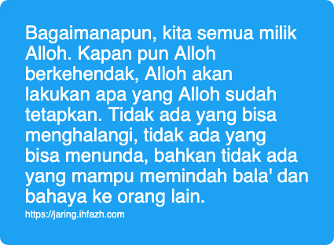

Kami adalah Milik Alloh
Ketika mendapat musibah - apa saja - tentunya ucapan pertama yang keluar dari seorang muslim adalah innaa lillaahi wa innaa ilaihi rooji'uun. Kami adalah semata mata milik Alloh, dan kami akan kembali kepada Nya.
Orang yang mengucapkan ini mendapat pujian dan rahmat dari Alloh. Dan mereka termasuk orang orang yang mendapatkan petunjuk.
Lalu, apa makna yang terkandung dari ucapan tersebut?
Kita meyakini bahwa kita ini - keseluruhan dari kita, nyawa, anggota badan, harta, dan segala yang kita miliki ini - adalah milik Alloh. Artinya, Alloh ada hak untuk melakukan apa saja kepada kita. Bisa berupa kenikmatan, musibah, atau campuran keduanya.
Tentunya, Alloh berkehendak di atas segala kebijaksanaan-Nya dan keadilan-Nya. Kita sebagai hamba menerima dan pasrah serta meyakini itu.
Kita-pun perlu untuk memikirkan hikmah apa dibalik musibah yang melanda kita. Pelajaran apa yang bisa dipetik. Peringatan apa yang sedang datang. Nikmat apa yang terkandung di balik pahit-nya kejadian dan lara hati yang membakar.
Paling utamanya, Alloh siapkan hadiah ukhrowi bagi orang orang yang mampu bersabar dan ridho terhadap ketetapan-Nya.
Sekedar ucapan dan tulisan itu mudah. Namun tatkala ajal musibah itu sedang melanda, siapa tahu? Di mana diri kita dari konsep kami adalah milik Alloh semata?
Konsep ini harus direnungi baik baik, baik yang sedang dilanda musibah secara langsung, maupun mereka yang melihat dari jauh. Bagaimanapun, kita semua milik Alloh. Kapan pun Alloh berkehendak, Alloh akan lakukan apa yang Alloh sudah tetapkan. Tidak ada yang bisa menghalangi, tidak ada yang bisa menunda, bahkan tidak ada yang mampu memindah bala' dan bahaya ke orang lain.
Kami adalah milik Alloh semata. Meyakini ini juga mengarahkan kita untuk berhati hati dalam bertindak serta berucap. Seperti orang yang meminjam mobil orang lain, dia akan berhati hati dalam mempergunakannya sehingga tidak merusak dengan sengaja. Dia akan menjaga sebaik baiknya, selama mobil itu ada ditangannya. Bila ada kerusakan, segera dia menginformasikan dan mengkomunikasikan masalah tersebut kepada pemiliknya. Begitu pula ketika ada musibah yang melanda, seorang perlu bertindak dan berucap sebagaimana yang diijinkan oleh Pemilik segalanya. Seorang juga perlu mengadukan musibah tersebut kepada Dzat yang dapat mengangkatnya.
Mengingat dan mensyukuri kenikmatan seperti dibahas di Syukur Meringankan Musibah dapat meringankan rasa terpuruk yang sedang menimpa. Dan setidaknya ada beberapa "ibadah" yang sedang terjadi dengan itu:
-
sabar sehingga tidak melakukan perbuatan yang dilarang oleh Sang Pemilik alam semesta
-
ridho sehingga kita menerima ketetapan Alloh
-
syukur atas segala nikmat yang selama ini Alloh berikan, dan nikmat yang saat ini masih Alloh titipkan kepada kita.
Semoga Alloh ringankan semua orang yang mendapatkan musibah, menguatkan mereka dan memberikan taufik agar bisa terus berada di jalanNya.